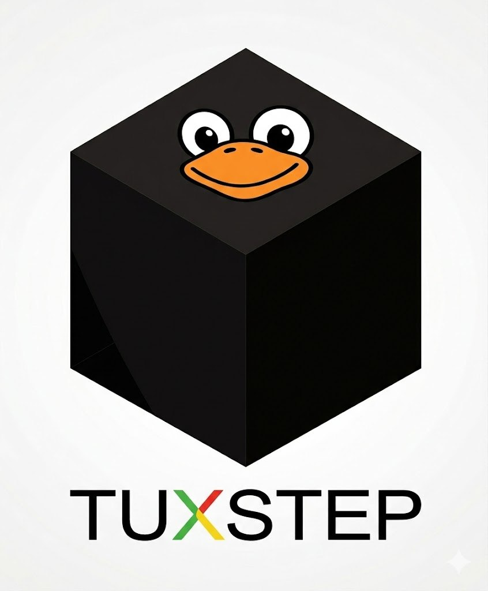

A modern NeXT-inspired operating system. Linux kernel underneath, a Darwin userland on top: Apple's libsystem as the system libc, BSD coreutils, and GNUstep frameworks (via Gershwin) for Cocoa-style applications. ELF-formatted, no Mach-O execution.
For macOS applications, TuxSTEP makes porting easier than any other solution — Apple's libsystem ships the BSD APIs (kqueue, kevent, mach_absolute_time, FSEvents) that glibc lacks, Apple's headers install at /System/Library/Headers/, and GNUstep provides source-compatible Cocoa frameworks. A macOS app typically rebuilds with far fewer patches than anywhere else.
For existing Linux apps, pkgwrap turns any apt package into a self-contained .app bundle deployable to /Local/Applications/, /Network/Applications/, or ~/Applications/ — Linux ecosystem available on demand, none of it polluting /System.
The filesystem follows NeXT's four-domain model — /System, /Network, /Local, plus per-user homes under /Local/Users/<name> or /Network/Users/<name> (for NFS-mounted users that follow you across machines). Cocoa APIs walk the domains automatically. Deployment is drag-and-drop: copy /System to a volume, the volume becomes bootable.
Tux (Linux kernel) + STEP (NeXTSTEP heritage). v3.3 generated 2026-04-26. The architectural source of truth for the project lives at tuxstep/tuxstep/PLAN.md.
TuxSTEP is a Linux distribution where the userspace combines the XNU open-source userland with the GNUstep frameworks. The Linux kernel provides hardware support and ecosystem reach. From PID 1 upward, every process is libsystem-linked — a coherent stack assembled around best practices and technical correctness rather than backward-compat with any single legacy.
| Layer | Source |
|---|---|
| Linux kernel + drivers + firmware | kernel.org upstream Linux + linux-firmware |
| System libc | Apple's libsystem (apple-oss-distributions/Libc + libplatform + libpthread + libmalloc + libclosure + libdispatch), ported to ELF |
| Coreutils / shell | Apple's BSD-derived utilities (file_cmds, shell_cmds, system_cmds, network_cmds, text_cmds) + zsh, all libsystem-linked |
| Objective-C runtime | libobjc2 (via Gershwin) |
| Foundation / CoreFoundation | libs-base + libs-corebase (GNUstep, via Gershwin), rebuilt against libsystem |
| Filesystem layout | NeXT-style: /System, /Network, /Local, /Volumes at root. All system-internal Unix infrastructure under /System/Library/. No compat symlinks. |
The design space here is full of plausible-sounding adjacent projects. TuxSTEP rejects each of them in favor of a sharper identity:
| Not | Because |
|---|---|
| A macOS binary runner | No mldr, no dyld, no Mach-O execution path. Brew bottles and MacPorts ports do not run unmodified. |
| A Darling fork | Darling targets Mach-O ABI compatibility, which TuxSTEP doesn't pursue. We build Apple's source as ELF instead. |
| A Mac OS X clone | The aesthetic is NeXT-inspired, not bug-for-bug Apple-compatible. Where Apple's behavior is bad, we don't preserve it. |
| "Linux with Apple themes" | The userland is genuinely Apple-derived source code, recompiled against libsystem. Themes don't enter into it. |
| A glibc-based distribution | libsystem is the system libc. glibc isn't present in v0.1 anywhere in the running system. |
| A GNU/Linux distribution | No GNU coreutils, no bash (zsh), no GCC (clang), no apt. Linux kernel + Apple userland. |
One coherent stack, ELF-formatted throughout, libsystem-linked end to end.
+-------------------------------------------------------------+
| Cocoa-style applications (Obj-C, libobjc2, libs-base) |
+-------------------------------------------------------------+
| Apple BSD coreutils, zsh, dev tools (clang, lld, ar...) |
+-------------------------------------------------------------+
| Foundation (libs-base) | CoreFoundation (libs-corebase) |
| libdispatch | libobjc2 | tools-make |
+-------------------------------------------------------------+
| Apple libsystem (libc, pthread, platform, malloc) |
| ELF format. /System/Library/Libraries/libSystem.so |
+-------------------------------------------------------------+
| Linux kernel + drivers |
| KMS, devtmpfs, framebuffer console |
+-------------------------------------------------------------+
Every userspace binary in TuxSTEP is ELF and links against /System/Library/Libraries/libSystem.so — no exceptions. Every process makes Linux syscalls (translated by libsystem from BSD/Mach syscall conventions to Linux numbers). There is no second runtime, no parallel libc, no chroot, no namespace switching.
Four real directories at root. No symlinks. Everything system-internal lives under /System/Library/. More pure than NeXTSTEP itself was.
/ ISO root
│
├── System/ the entire OS
│ └── Library/
│ ├── Kernels/<kver>/ kernel image, initramfs
│ ├── Firmware/ firmware blobs
│ ├── Modules/<kver>/ kernel modules (post-v0.1; empty in v0.1)
│ ├── Libraries/ libSystem.so, libobjc2.so, libdispatch.so,
│ │ libgnustep-base.so, libgnustep-corebase.so
│ ├── Headers/ Apple + GNUstep headers
│ ├── Tools/ Apple BSD coreutils, zsh, cc, ld, ar, ...
│ ├── Makefiles/ gnustep-make
│ └── Private/ system-internal Unix infrastructure
│ ├── etc/ passwd, hosts, fstab, ...
│ ├── var/ logs, state, spool
│ ├── tmp/ temp files (tmpfs at runtime)
│ ├── dev/ devtmpfs mount point
│ └── sys/ sysfs mount point (post-v0.1)
│
├── Network/ site-wide / NFS-mounted (empty in v0.1)
├── Local/ per-machine sysadmin (empty in v0.1)
└── Volumes/ mounted external media
What's not at root: /usr, /bin, /sbin, /lib, /lib64, /boot, /home, /Users, /etc, /var, /tmp, /dev, /sys, /proc, /run, /mnt, /opt, /private. Apple's libsystem and downstream Apple-OSS components are patched at build time so their hardcoded path constants (_PATH_DEVNULL, _PATH_PASSWD, etc.) and direct path-string literals point at /System/Library/Private/.... Patches live per-component in patches/ directories; the vendored Apple-OSS submodules themselves remain untouched. Build-time-only modification preserves the cheap-sync property — bumping Apple-OSS releases is still git submodule update; patches reapply.
User homes (post-v0.1 multi-user support) live at /Local/Users/<name>/ for interactive users and /Network/Users/<name>/ for NFS-mounted users, following Gershwin's NeXT-style convention. There is no top-level /Users.
The userland lives at /System/Library/Tools/; libraries at /System/Library/Libraries/. The shell's default $PATH is just /System/Library/Tools.
The disk is laid out as two GPT partitions:
Disk:
├── Partition 1: FAT32 ESP, 5 MB, hidden (chainloader stub only — never auto-mounted)
└── Partition 2: ext4, rest of disk
└── /System/... (entire OS)
Boot sequence:
\EFI\BOOT\BOOTX64.EFI (or BOOTAA64.EFI on arm64, BOOTIA32.EFI on UEFI i386). This is a thin tuxstep/grub stub (~1-3 MB) that knows how to read ext4. On legacy BIOS, GRUB stage 1 loads from MBR and stage 1.5 from the BIOS-boot region instead./System/Library/Boot/kernel.efi.CONFIG_EFI_STUB=y, so the kernel image is an EFI binary) boots from there. KMS drivers built into the kernel come up automatically; framebuffer console renders at native resolution./System/Library/Private locations (devtmpfs, tmpfs for /tmp, etc.), and pivots./System/Library/Tools/zsh directly. No init system, no service supervisor, no auth chain. The user is at a # prompt as root on TTY1.The 5 MB FAT32 ESP is hidden by partition flags and never appears in ls /, mount, or df output — it's plumbing required by UEFI firmware, not part of the running system. After initial setup, kernel updates only write to /System/Library/Boot/ on the ext4 partition; the ESP itself is touched once at install and never again.
The bootloader is tuxstep/grub, a fork of upstream GNU GRUB. We fork to add TuxSTEP-specific UX: silent boot by default, Mac-style boot-key shortcuts (cmd-V for verbose boot, cmd-S for single-user mode, option/alt to pick boot volume, shift for safe boot, C to boot from CD), and a TuxSTEP-styled boot screen. GRUB chosen as the only mainstream bootloader covering BIOS i386/amd64 and UEFI i386/amd64/arm64 from a single codebase.
v0.1 is intentionally minimal. launchd, darlingserver, login chain, getty, hot-plug, Mach IPC, and the GUI stack are all post-v0.1 work. The single-user-shell milestone proves the architecture without committing to subsystems whose design isn't yet locked.
TuxSTEP's deployment model is classic-Mac: /System is the OS. Drag it to a volume, the volume becomes bootable.
An auto-bless daemon (post-v0.1, launchd-managed) watches mounted volumes for /System/Library/Boot/kernel.efi being written. When detected, it silently performs whatever partition surgery is needed to make the volume bootable:
resize2fs on the unmounted partition. Non-destructive of data; takes seconds on near-empty disks.Two user-explicit commands accompany the daemon:
newfs <disk> — convenience tool to format a disk for TuxSTEP (creates the layout: 5 MB hidden ESP + ext4, pre-installs the chainloader). Destructive of any existing data on the disk, like any format command.bless <volume> — same logic as the auto-bless daemon, but invoked manually for users who want explicit control.The user-visible workflow is just:
$ cp -aR /System /Volumes/NewDisk/ # this is the only command the user ever needs
$ # disk is now bootable
No format step required (auto-bless handles partition surgery on the fly). No bless command required (auto-bless does it). Like classic Mac: drag the System Folder, the disk is ready. The same workflow applies on i386, amd64, and arm64 — bless detects the firmware mode and adapts (UEFI gets a hidden ESP; BIOS gets MBR + BIOS-boot region).
Every line in the v0.1 ISO traces back to one of four sources.
| Component | Source | What we do |
|---|---|---|
| Linux kernel | kernel.org | Build with TuxSTEP .config (KMS drivers built-in, devtmpfs, framebuffer console, common storage/networking, ext4/isofs/squashfs) |
| Kernel modules / firmware | kernel.org / linux-firmware | Ship as-is |
| libsystem (libc, pthread, platform, malloc, dispatch, closure) | apple-oss-distributions/{Libc, libplatform, libpthread, libmalloc, libclosure, libdispatch} | Vendor as submodules; build as ELF via parallel linux-glue/ layer; output libSystem.so |
| Apple BSD coreutils + zsh | apple-oss-distributions/{file_cmds, shell_cmds, system_cmds, network_cmds, text_cmds, zsh} | Port to compile against libsystem; install at /System/Library/Tools/ |
| clang / lld / LLVM tools | llvm-project | Cross-build against libsystem; install at /System/Library/Tools/{cc, ld, ar, ...} |
| Apple system headers | apple-oss-distributions xnu, Libc, etc. | Install at /System/Library/Headers/ |
| libobjc2, libdispatch, tools-make, libs-base, libs-corebase | GNUstep / Gershwin | Patch + rebuild against libsystem; install at /System/Library/Libraries/ and /System/Library/Makefiles/ |
| Bootloader | GRUB upstream | Fork as tuxstep/grub: silent boot default, Mac-style boot keys (cmd-V, cmd-S, option, etc.), TuxSTEP-styled boot screen. Per-arch builds (grub-pc, grub-efi-ia32, grub-efi-amd64, grub-efi-arm64) shipped on every TuxSTEP ISO. |
Apple-derived source is vendored as git submodules and never edited in place. Each component repository keeps Apple's source as a submodule alongside two parallel directories that are TuxSTEP's own: linux-glue/ for kernel-specific code (syscall translation, struct adapters, signal/errno remapping) and patches/ for build-time patches that rewrite hardcoded path constants (_PATH_DEVNULL and friends, plus direct path-string literals) so they target /System/Library/Private/.... Syncing is git submodule update --remote; patches are reapplied at the next build.
Roughly 10–13 months of focused work for one person. Each phase is bounded; later phases depend on earlier ones.
| Phase | Component | Estimate |
|---|---|---|
| 0 | tuxstep/libsystem-linux — Apple libsystem ported to ELF; libSystem.so at /System/Library/Libraries/; hello-world compiles and runs | 4–6 months |
| 1 | Bootstrap toolchain — clang + lld rebuilt against libsystem; Apple headers at /System/Library/Headers/; self-hosted | 3–4 months |
| 2 | Apple BSD coreutils + zsh ported to libsystem; installed at /System/Library/Tools/ | 3–4 months |
| 3 | Filesystem tooling: mount, umount, fsck.ext4 — minimal subset for ISO | 2–3 weeks |
| 4 | Gershwin stack rebuilt against libsystem (libobjc2, libdispatch, tools-make, libs-base, libs-corebase) | 1–2 months |
| 5 | Kernel config + initramfs + ISO assembly with chainloader-on-hidden-ESP layout; tuxstep/grub fork; i386 + amd64 + arm64 ISOs in CI | 1–2 months |
Phases 0–2 are the long poles. Phases 3–5 fall out quickly once libsystem and the toolchain are stable.
Post-v0.1 phases (informational, not part of v0.1 timeline): Phase 6 ships newfs, bless, and the auto-bless daemon for the drag-and-drop deployment model. Phase 7 ports launchd as PID 1. Phase 8 brings darlingserver back for Mach IPC. Phase 9 rebuilds the GUI stack (libs-gui, libs-back, libs-opal, libs-quartzcore) against libsystem.
The deliverable is three bootable ISOs — one each for i386, amd64, and arm64. CI gates green on all three before v0.1 is declared shipping. After GRUB loads the kernel and the squashfs mounts, the user lands at a # prompt at TTY1, no glibc anywhere on the system. From the shell:
# uname -a
Linux tuxstep 6.16.0-tuxstep-amd64 #1 SMP ... x86_64
# ldd /System/Library/Tools/ls
/System/Library/Libraries/libSystem.so (0x...)
# ls /
Local Network System Volumes
# ls /System/Library/Libraries/
libdispatch.so libgnustep-base.so libobjc2.so libSystem.so
libgnustep-corebase.so
# cat > /System/Library/Private/tmp/hello.m <<EOF
#import <Foundation/Foundation.h>
int main(void) {
@autoreleasepool {
NSLog(@"Hello from TuxSTEP v0.1");
}
}
EOF
# /System/Library/Tools/cc -ObjC -lSystem -lobjc2 -ldispatch -lgnustep-base \
/System/Library/Private/tmp/hello.m \
-o /System/Library/Private/tmp/hello
# /System/Library/Private/tmp/hello
2026-XX-XX HH:MM:SS.fff Hello from TuxSTEP v0.1
That's the v0.1 milestone. Three bootable ISOs (i386, amd64, arm64), each demonstrating: Linux kernel + Apple libsystem + Apple BSD userland + Gershwin runtime stack + Obj-C compilation, end to end, ELF, no glibc, four real top-level directories with no compat symlinks. ls / shows exactly the system's identity.
The architecture is deliberately designed to make tracking Apple's open-source releases inexpensive and predictable.
linux-glue/ directories. Adding kernel-specific behavior never touches Apple source.patches/ series applied at build time after git submodule update. They rewrite hardcoded path constants (_PATH_* macros, plus direct "/etc/foo" string literals) to target /System/Library/Private/.... The set is small and stable; Apple seldom changes path constants.git submodule update --remote, not a merge.syscall_table.txt; no new hand-written code.audit_paths.sh script enumerates direct path literals in newly-vendored Apple source so the patch series can be extended mechanically.Estimated ongoing sync work after the initial port: 1–3 days per Apple OSS release. Most bumps require zero changes to the patch series; occasional bumps add 1–3 patches if Apple introduced new hardcoded paths.
v0.1 is deliberately small. The following are real and planned, but later:
libsimple_darlingserver.so as ELF, darlingserver as a system daemon. Enables NSXPCConnection-style IPC and any code path that depends on Mach ports.login, getty, auth subsystem. Multi-user system with home directories under /Local/Users/<name>.tuxstep-uevent, tuxstep-modload; ship more of the kernel as modules; USB devices auto-detect.pkgutil + installer.Each is a separately-scoped follow-on milestone after the v0.1 core base is shipping.
Several plausible alternatives were considered and rejected:
| Alternative | Why rejected |
|---|---|
| Run unmodified Mach-O binaries (Darling-style) | Requires maintaining mldr, dyld, binfmt support, and a Mach-O loader stack forever. Buys macOS-binary compatibility, which is not a TuxSTEP goal. The complexity isn't worth it for a project that doesn't ship that use case. |
| Use glibc with Apple-OSS components as ELF additions | Two-libc world long-term creates persistent friction (printf from which libc?). Better to commit to one libc — and Apple's libsystem is more stable, BSD-aware, and aesthetically correct for a NeXT-derived project. |
| Use GNUstep's libobjc2 + Apple's libobjc4 in parallel | Apple's libobjc4 and libobjc2 maintain separate class registries; can't share an Obj-C runtime. Pick one. libobjc2 is modern, arm64-clean, and free of Apple-ABI constraints. |
| Substitute Apple's Foundation with GNUstep's at the ABI level | Mach-O binaries linked against Apple's Foundation expect specific ivar layouts and method dispatch behaviors. GNUstep's Foundation cannot satisfy them at runtime even via shims. This rules out the Mach-O execution path entirely — and confirms the ELF-only direction. |
| Build a Darwin personality kernel module to run unmodified libsystem.dylib | Brings back the Mach-O loader maintenance burden plus a kernel module across kernel versions. Darling tried this (darling-newlkm) and abandoned it. The userspace darlingserver path is simpler if Mach IPC is needed at all. |
| Replace glibc with Apple libsystem on a Devuan-derived distribution | Mixing glibc-linked Devuan packages with libsystem-linked TuxSTEP code in the same process trees is undefined behavior. A clean ISO with no Devuan binaries is the simpler architecture. |
The chosen architecture — Linux kernel + libsystem ELF userland + GNUstep stack on libsystem — is the simplest design that satisfies the project's actual goals (NeXT-inspired, Apple-flavored, modern, maintainable, arm64-clean) without inheriting compatibility burdens it doesn't need.
v3.3 — generated 2026-04-26 — trims the project-identity prose to the essentials. Architectural source of truth: github.com/tuxstep/tuxstep/blob/main/PLAN.md.